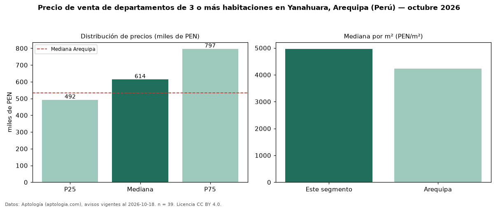

Precio de venta de departamentos de 3 o más habitaciones en Yanahuara, Arequipa (Perú) — octubre 2026
Con 39 avisos vigentes, el precio mediano de departamentos de 3 o más habitaciones en venta en Yanahuara, Arequipa (Perú) es PEN 613.800. Eso es 15 % por encima de la mediana de Arequipa para departamentos de 3 o más habitaciones (PEN 533.532). Por metro cuadrado, la mediana es PEN 4.968/m² (n = 38 avisos con área), 17 % por encima de Arequipa (PEN 4.234/m²). Son 81 % de los 48 avisos de departamentos en venta de la zona, cuya mediana general es PEN 576.000 (+7 %). El área mediana anunciada es 118 m². La mitad central de los avisos va de PEN 492.000 a PEN 796.750 (razón 1,6), una dispersión moderada. Datos: Aptología (aptologia.com), CC BY 4.0 — https://www.aptologia.com/pe/venta/arequipa/yanahuara. Archivos: PDF, CSV con las cifras y gráfica PNG.

| Avisos únicos | 39 |
|---|---|
| Percentil 25 | COP 492.000 |
| Mediana | COP 613.800 |
| Percentil 75 | COP 796.750 |
| Mediana por m² | COP 4.967 |
Fuente: avisos vigentes de portales inmobiliarios recopilados por Aptología, deduplicados (mínimo 30 avisos únicos por celda). Precios pedidos, no cerrados. Fecha: 2026-10-18.